🛣Stanford CS231n:Deep Learning for Computer Vision
Sequence to Sequence with RNNs
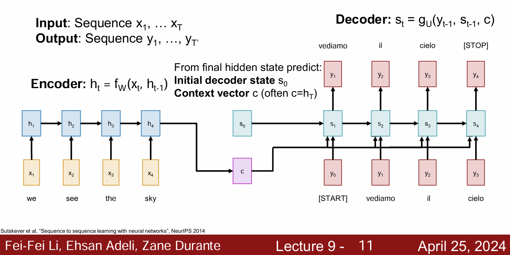
左侧的RNN（Encoder：\(h_t=f_w(x_t,h_{t-1})\)）将输入序列编码总结成2个向量（\(s_0\)，\(c\)），\(s_0\)作为解码器的初始状态(initial decoder state,或者设置为0)，\(c\)作为解码器的上下文向量（Context vector，tansfer encoded sequence information to the decoder）。
右侧的RNN(decoder)将这个向量解码成输出序列。
-
During Training: 在训练网络过程中，每次不使用上一个state的输出作为下一个state的输入，而是直接使用训练数据的标准答案(ground truth)的对应上一项作为下一个state的输入,不管输出是否正确（teacher-forcing）
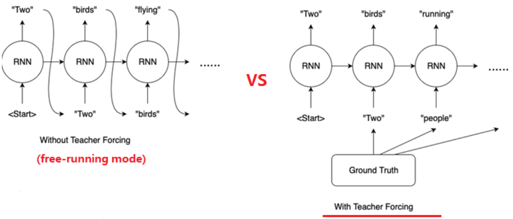
-
During Test-time:
我们从输出中进行抽样，直到抽中
[STOP]
显然，这个Seq2seq模型并不适用于长文本任务 ，因为如果输入序列过长，基于RNN的编码器没有能力去捕捉足够的信息，导致解码器无法生成准确的输出。并且，希望用单一的上下文向量\(c\)去总结整个长序列信息，显然是不现实的。
我们可以想象一种算法，不是使用单个的上下文向量\(c\)， 而是在decoder的每个时间步中计算一个上下文向量，即给予decoder专注于输入序列的不同部分，选择或者重建一个新的上下文向量的能力。
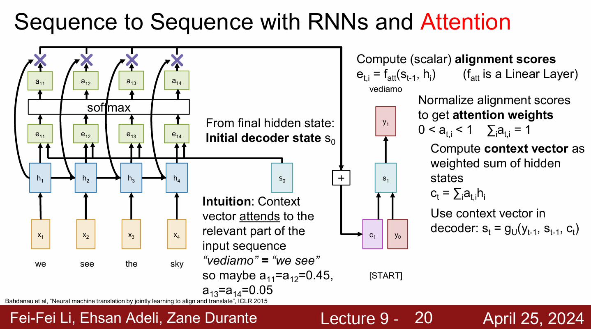
如上，我们编写一个对齐函数\(f_{att}\)（alignment function，通常为MLPs），将Encoder的隐藏状态与\(s_0\)输入得到alignment scores（how much should we attend to each hidden state of encoder），然后使用softmax函数归一化得到权重\(a_{t,i}\)（attention weights）。
得到权重后，我们使用加权求和得到上下文向量\(c_t\)，即： $$ c_t=\sum_{i=1}^{T_x}a_{t,i}h_i $$
其中，\(a_{t,i}\)表示第\(t\)个decoder的隐藏状态对第\(i\)个encoder的隐藏状态\(h_i\)的注意力权重。
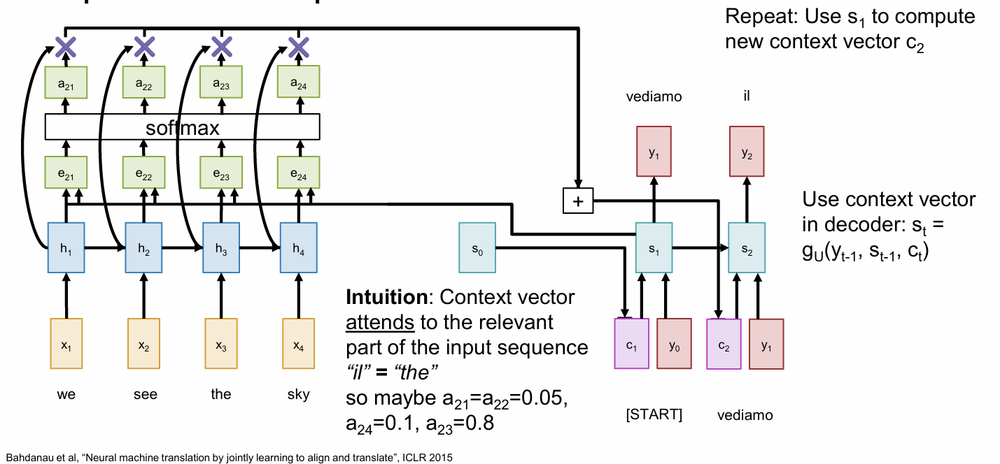
接下来重复这个过程，将下一个时间步的状态\(s_1\)与Encoder的各个\(h_t\)输入\(f_{att}\),得到\(c_2\)，以此类推。
因此：
-
输入序列的信息传递不会受单一上下文向量的阻碍
-
Decoder的每个时间步都能够“查看”输入序列的不同部分，从而能够生成更高质量的输出序列。
对于计算得到的概率分布\(a_{t,i}\)进行矩阵可视化，可以看到decoder输出的每个单词关注了输入序列的不同部分：
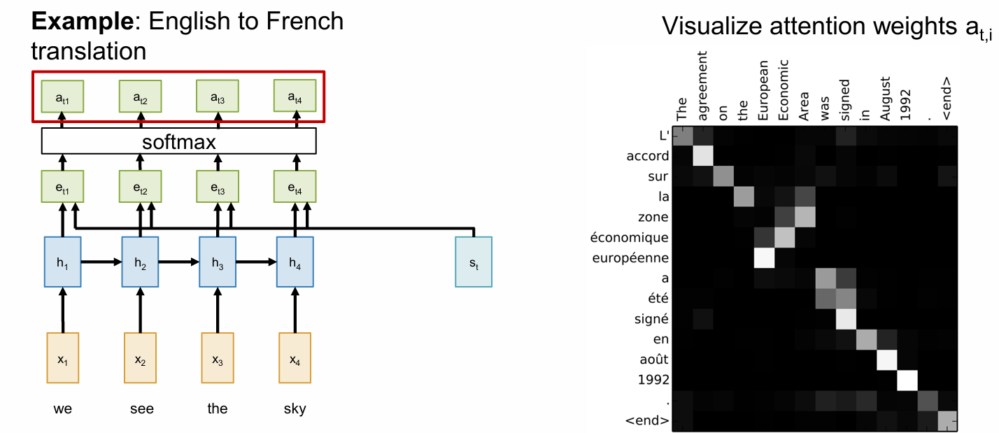
我们将两种语言的单词进行对应，可以发现attention机制很好地捕捉到了两种语言中同义单词之间的对应关系：
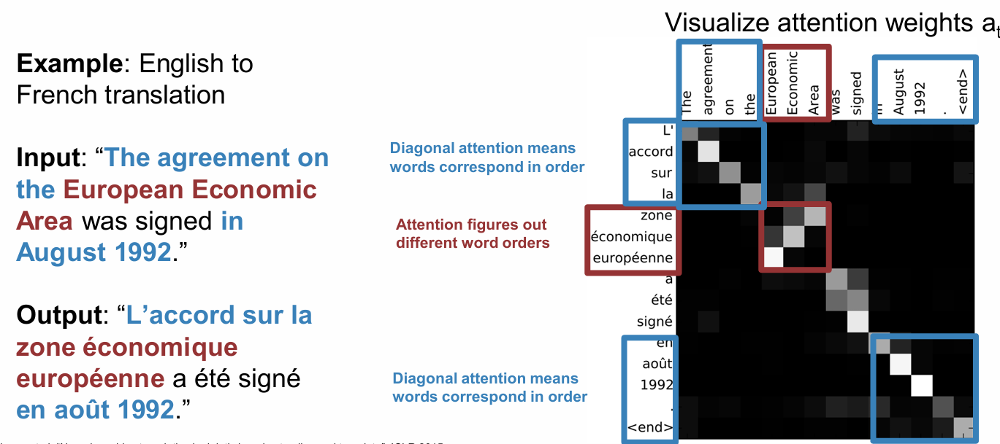
事实上，attention机制并不关心输入是否是一个顺序序列（ordered sequence ），而是对整个输入序列进行“注意”。
Image Captioning with RNNs and Attention
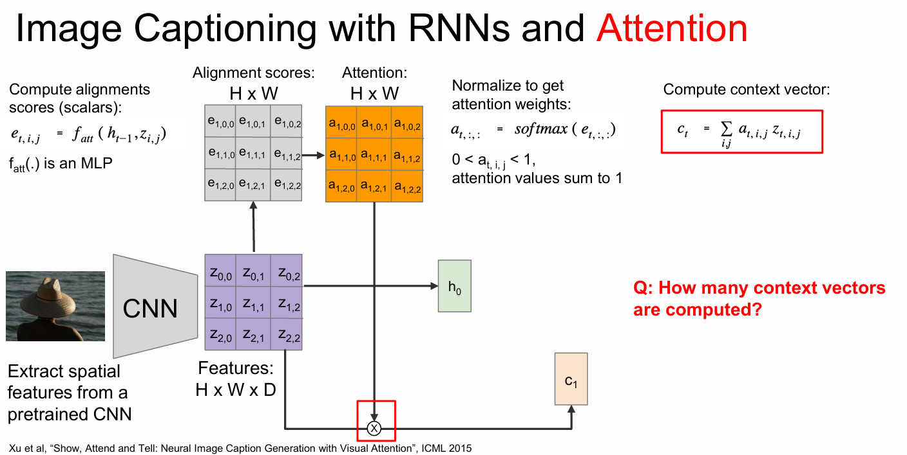
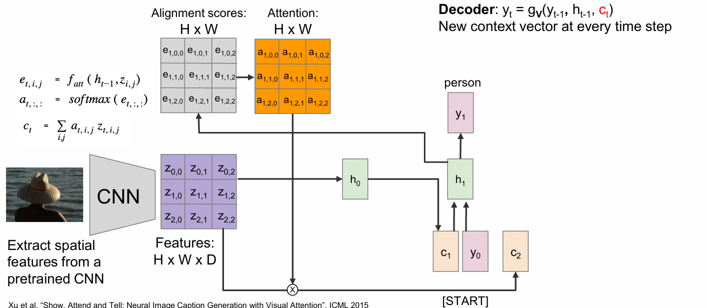
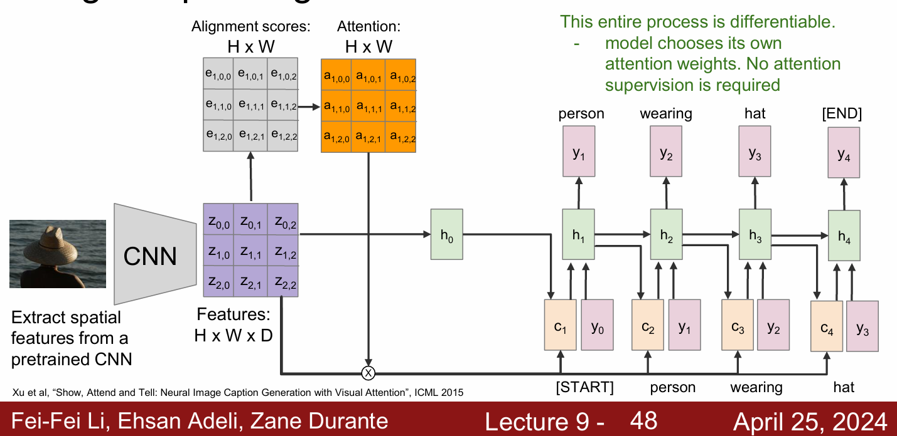
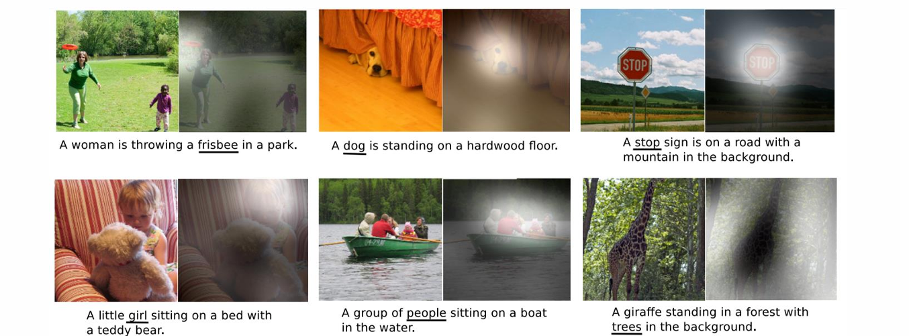
General Attention Layer
我们先对image captioning中的attention机制进行总结：
Input:
-
Features: \(\mathbf{z}\) (shape：H x W x D)
-
Query：\(\mathbf{h}\) (shape：D)
\(D\)表示特征图数
Operations:
-
Alignment func: \(e_{i,j} = f_{att}(\mathbf{z}_{i,j}, \mathbf{h})\) (shape: H x W)
-
Attention weights: \(\mathbf{a} = softmax(\mathbf{e})\) (shape: H x W)
Outputs:
- Context vector: \(c = \sum_{i=1}^{H}\sum_{j=1}^{W}a_{i,j}\mathbf{z}_{i,j}\) (shape: D)
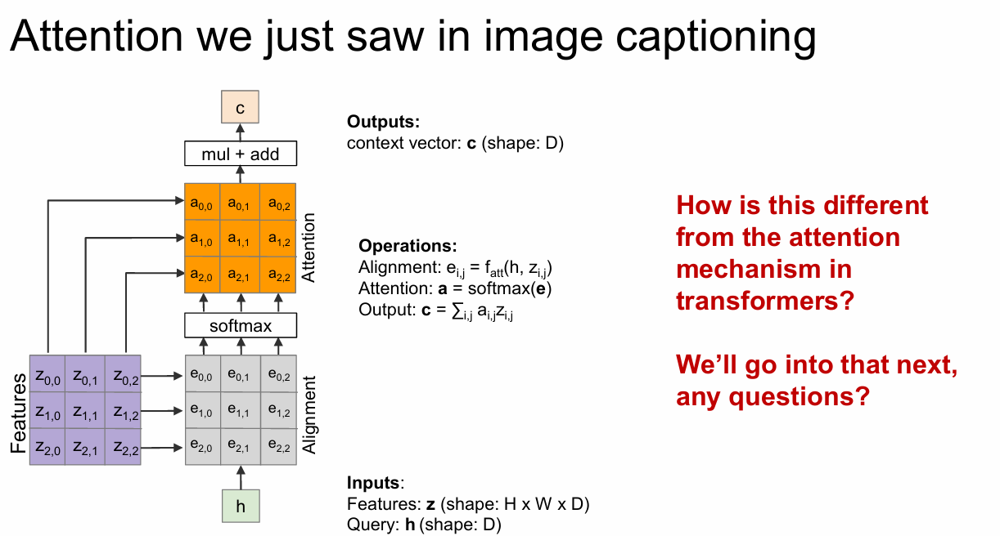
前面我们提及到，attention机制不关注输入数据的顺序，因此我们将input vectors拉伸成\(\mathbf{x}\)（shape: N x D），其中\(N = H \times W\)。
理解：将\(H \times W\)展开成\(N\)，即输入的信息共有\(N\)个向量，每个向量的维度为\(D\)。如果是图像的话，\(N\)个向量的其中一个对应原图片的某一块（感受野）；如果是文本序列的话，\(N\)个向量的其中一个对应文本序列中的某个输入语句/单词。如下图，输入的是200个序列，每个序列长度为800
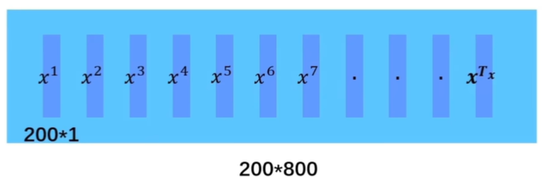
对于\(f_{att}\)函数，我们将其定义为点积操作(dot product)，即： $$ e_i = h \cdot x_i $$
也可以使用缩放点积(scaled dot product)：
改用scaled dot product的理由：
We suspect that for large values of \(d_k\), the dot products grow large in magnitude, pushing the softmax function into regions where it has extremely samll gradients.
当输入信息的维数\(d\)很大时，点积所得（dot product）的值由很多项相加而成，通常会有比较大的方差。
假设上述的\(h\)与\(x\)(上文的\(x_i\)向量)相互独立且均值为0，方差为1
因为\(h_i\)与\(x_i\)相互独立，所以：
因此：\(\mathbf{E}[h_i x_i] = \mathbf{E}[h_i] \mathbf{E}[x_i]= 0\)
可得：
综上：
因此，当\(d\)很大时，\(h \cdot x\)方差的值也会变大
而对于softmax函数，有：
因此，当\(d\)很大时，得到的\(x_i\)可能出现极大/极小的情况，导致计算的梯度值会趋近于0，引起梯度消失。
若使用缩放点积(scaled dot product)，则可以使得方差缩小为1：
这时，softmax 函数的梯度就不容易趋近于零了，因此使用缩放点积(scaled dot product)可以避免梯度消失的问题。
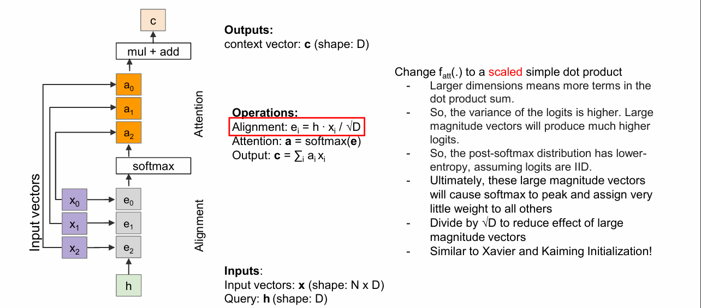
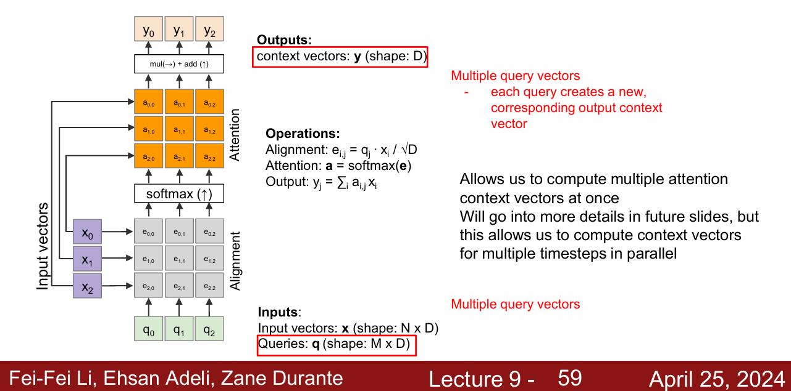
实际上，Decoder的每个时间步都对应一个query vectort（注意力不同），因此我们需要将拓展为\(\mathbf{q}\)（shape：M x D）
\(\mathbf{e} = \mathbf{q} \mathbf{Z^T}\)（shape：M x N）
对应的，\(\mathbf{a} = Softmax(\mathbf{e},dim=1)\) （shape：M x N）
shape：M x N，即一共M个query vector产生的权重向量\(\mathbf{a_j}，j=1,2,..,M\)，每个权重向量中有N个权重（对输入的N个信息的不同注意力）\(a_{i,j}，i = 1,2,...,N\)
Output context vectors ：\(Y = \mathbf{a} \mathbf{X}\) （shape：M x D），\(y_i = \sum_j a_{i,j} x_j\)（输入向量的加权组合）
回顾上述计算过程，我们使用query vector与input vector计算注意力权重，然后使用注意力权重对input vector进行加权求和，得到Output context vectors。这个过程中在两个不同功能上使用了input vector。
我们可以通过添加不同的FC层来从input vector中得到key vector与value vector，从而实现更复杂（add more expressivity）的注意力机制。
-
key vector: \(k = xW_k\)，（shape of \(W_k：D \times D_k\)）（shape of \(k：N \times D_k\)）
-
value vector: \(v = xW_v\)，（shape of \(W_v：D \times D_v\)）（shape of \(v：N \times D_v\)）
相应的，query vectors：\(\mathbf{q}\)的shape为：\(M \times D_k\)
\(\mathbf{e} = \mathbf{q} k^T\)，（shape of \(e：M \times N\)）,
\(e_{i,j} = \mathbf{q_i} k_j^T / \sqrt{D_k}\) (k的特征数为\(D_k\))
\(Y = \mathbf{a} v\)，（shape of \(e：M \times D_v\)）
\(y_j = \sum_i a_{i,j} v_i， j=1,2,...,M\)
引入了key vector与value vector后，我们就可以改变输出的维度了，这使得模型更加灵活。
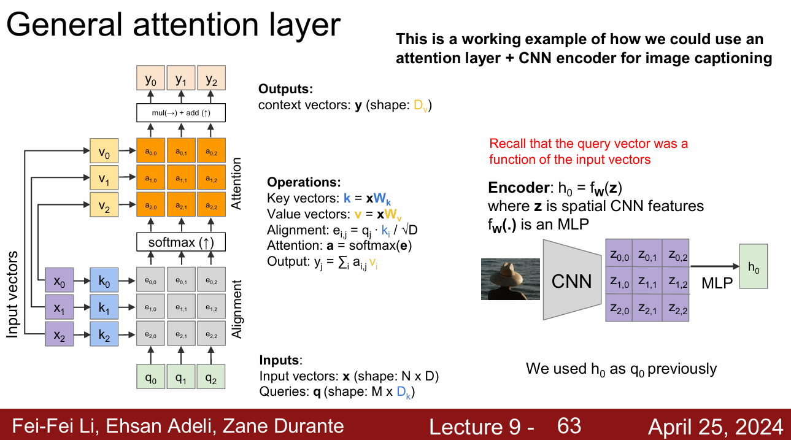
Self-attention Layer
事实上，我们可以从input vectors计算出query vectors，从而定义一个“自注意力”层。(Self-attention)
通过FC层，我们从input vectors计算出query vectors:
- Query vectors: \(\mathbf{q} = xW_q\)，（shape of \(W_q：D \times D_k\)）（shape of \(q：N \times D_k\)）
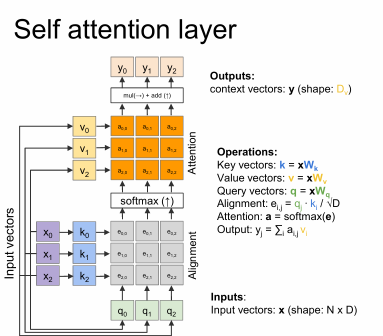
由于attention机制并不关心输入的顺序，即拥有“置换等变”（ Permutation equivariant）的特性，倘若更换输入向量的次序，只是会改变输出的顺序，而不会改变输出的内容。但显然，输入信息的前后顺序对语义影响极大。
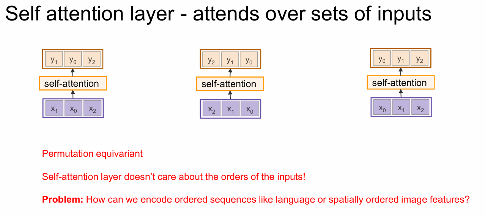
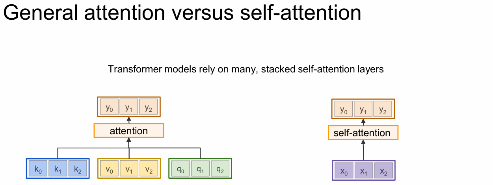
Positional encoding
为了具有位置感知能力，我们可以将输入与位置编码连接起来
而Positional Encoding（位置编码）技术通过为每个单词添加一个额外的编码来表示它在序列中的位置，这样模型就能够理解单词在序列中的相对位置。
Masked self-attention layer(掩码自注意力)
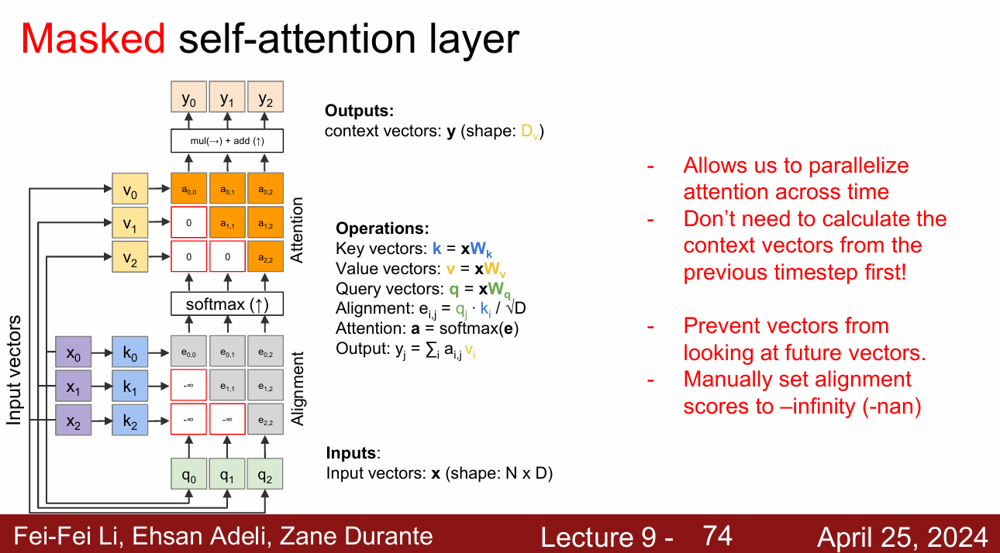
Multi-head self-attention layer
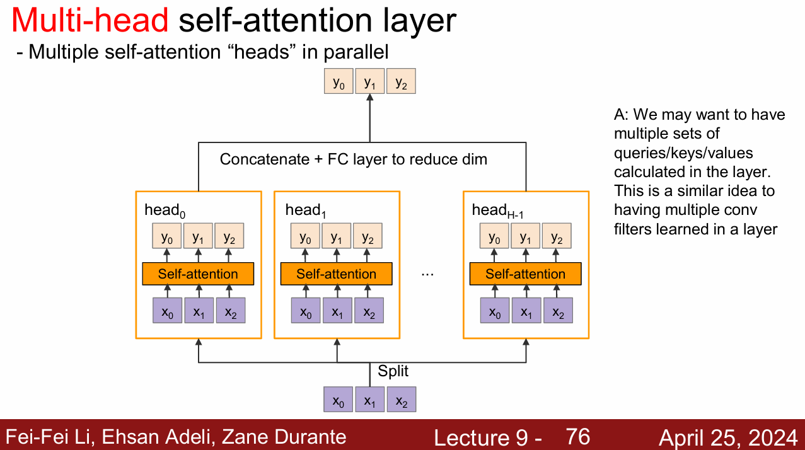
Image Captioning using Transformers
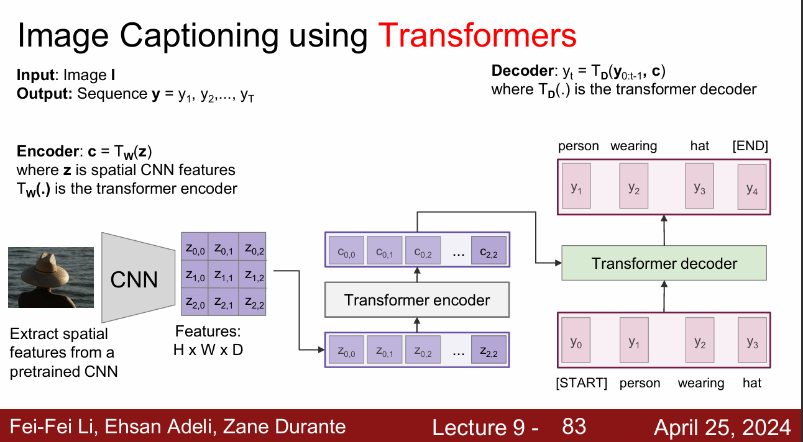
The Transformer encoder block
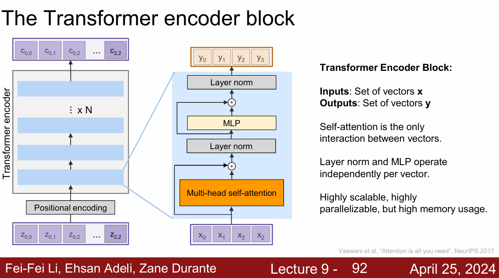
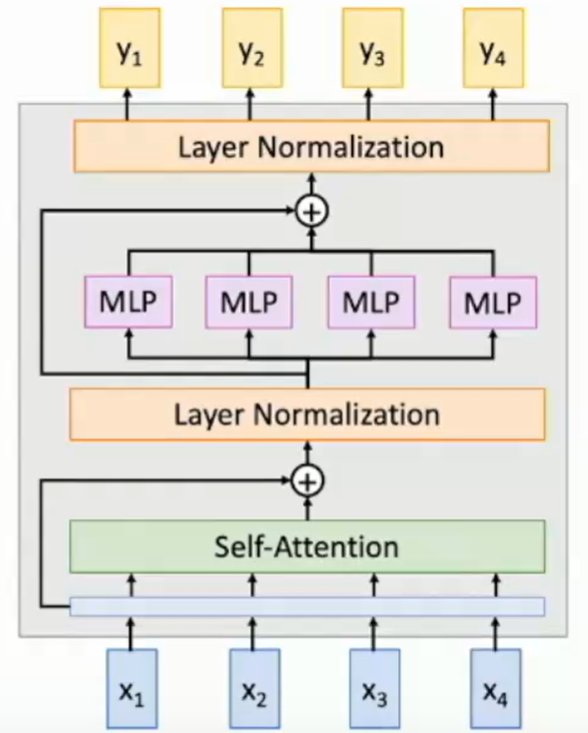
The Transformer decoder block
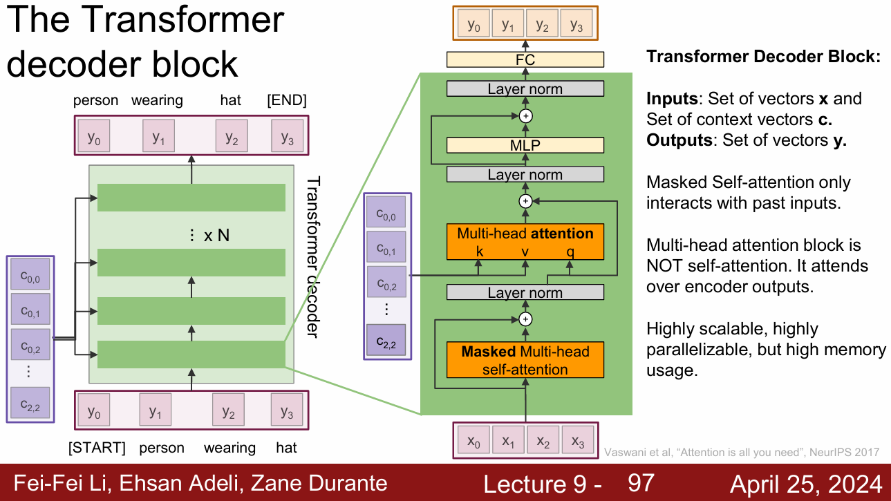